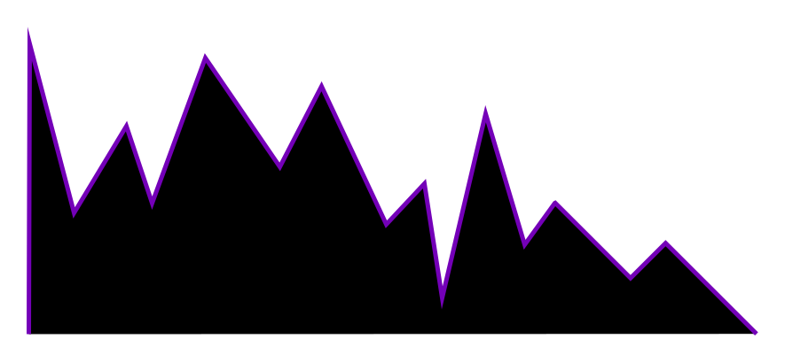
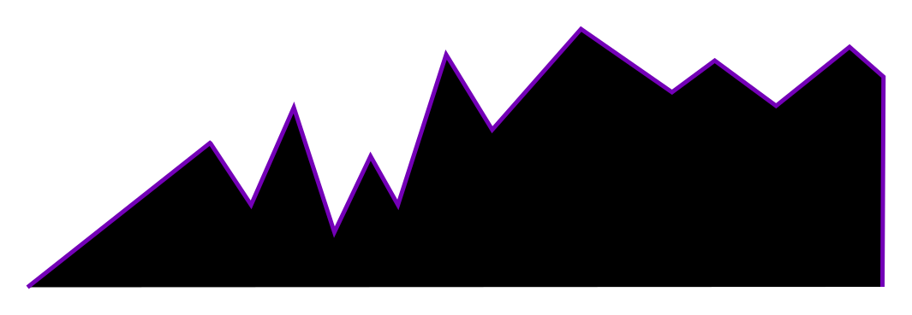
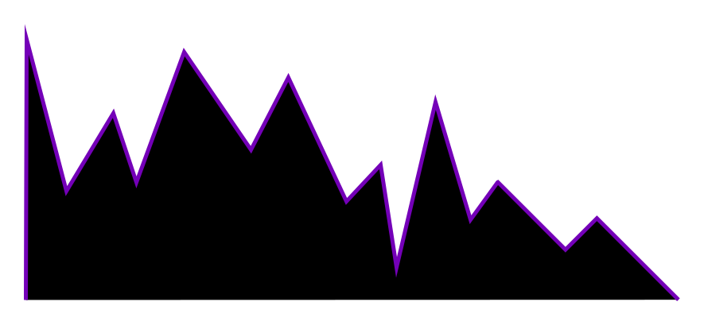
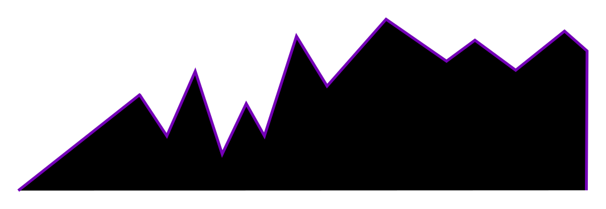

vaporwave
(According to wikipedia)
Vaporwave is a microgenre of electronic music and a subgenre of hauntology, a visual art style, and an Internet meme that emerged in the early 2010s,[25][26] and became well-known in 2015.[27] It is defined partly by its slowed-down, chopped and screwed samples of smooth jazz, 1970s elevator music,[27] R&B, and lounge music from the 1980s and 1990s. The surrounding subculture is sometimes associated with an ambiguous or satirical take on consumer capitalism and pop culture, and tends to be characterized by a nostalgic or surrealist engagement with the popular entertainment, technology and advertising of previous decades. Visually, it incorporates early Internet imagery, late 1990s web design, glitch art, anime, stylized Greek sculptures, 3D-rendered objects, and cyberpunk tropes in its cover artwork and music videos.
 


